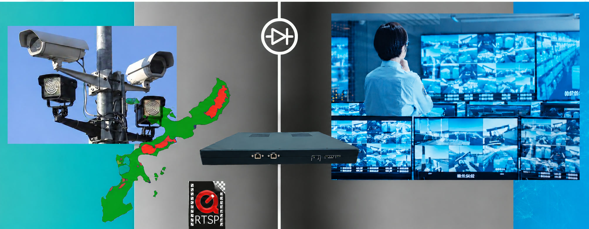

Securing the CCTV Network of a Military Air Base in Japan
Terafence USG isolates flight-line, perimeter and entry-control cameras from the base network without losing a frame of video
1The Problem
An air base keeps high-value assets out in the open: the flight line and aprons, hangars and shelters, fuel and munitions storage, taxiways, entry control points and kilometres of perimeter. IP video lets a limited security force cover that ground. It is the control room's eyes and ears between patrols and after dark.
Like most sites, the base had moved from closed-circuit analog CCTV to IP cameras, NVRs, video storage and AI analytics running on the same Ethernet infrastructure as the rest of the base. That turned every camera into a networked Linux computer, powered and connected around the clock. These cameras are rarely patched, have no firewall or anti-virus of their own, and are serviced by an outside contractor beyond the IT department's control.
2The Challenge
The cameras had become a serious attack surface:
- Physical entry points. A camera on the fence line or at a gate is a live network cable an intruder can reach. Default passwords are public, and cameras don't block brute-force attempts.
- A blinded control room. Whoever controls the NVR or AI can hide activity or blind operators during an emergency. Minutes of looped video are enough for a perimeter breach or a drone incursion.
- Feeds as intelligence. The video shows ramp activity, sortie tempo, guard rotation and gate procedure. Hijacked cameras can also be turned into botnets while appearing normal.
- Insider and contractor paths. Around 80% of attacks start inside the network. A laptop, USB key or remote-maintenance session gets past firewalls, IDS/IPS and NAC.
A firewall couldn't close the gap. Sooner or later it grants a live session to whatever matches a rule. If inbound traffic is blocked outright, RTSP breaks and the video stops.
3The Solution
Terafence USG was installed in-line between the CCTV segment and every other base asset, server and internet connection. It acquires streams from the configured cameras on Side A and serves every RTSP request from the NVR, VMS, AI and storage on Side B. The two sides are separate session termination points, so no TCP/IP session ever runs end to end.
- All TCP/IP traffic to the camera segment is blocked
- Full video performance: H.264/H.265, up to 25/30 fps, 1 Gbps
- PTZ commands are whitelisted, inspected and relayed over a secure out-of-band channel
- Camera IP, MAC and firmware are whitelisted, and any breach raises a cyber alarm

4The Impact
The base keeps full surveillance capability, and its cameras are no longer a way into the network.
For any site where cameras guard critical ground, Terafence USG keeps the video flowing and the attackers out.
A trust boundary both ways.
The base network is protected from the cameras, and the cameras are protected from the network.
Surveillance that can't be blinded.
There is never a live session to a camera, so feeds can't be manipulated and cameras can't be hijacked.
No operational compromise.
Existing cameras, NVR/VMS, video wall, control-room workflow and PTZ all kept working.
Contractor risk contained.
Third-party CCTV maintenance no longer means third-party reach into the base network.
Tell us where your boundary sits
Say what has to cross it. We will help you choose the right device and plan a pilot.